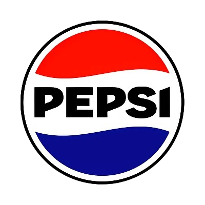
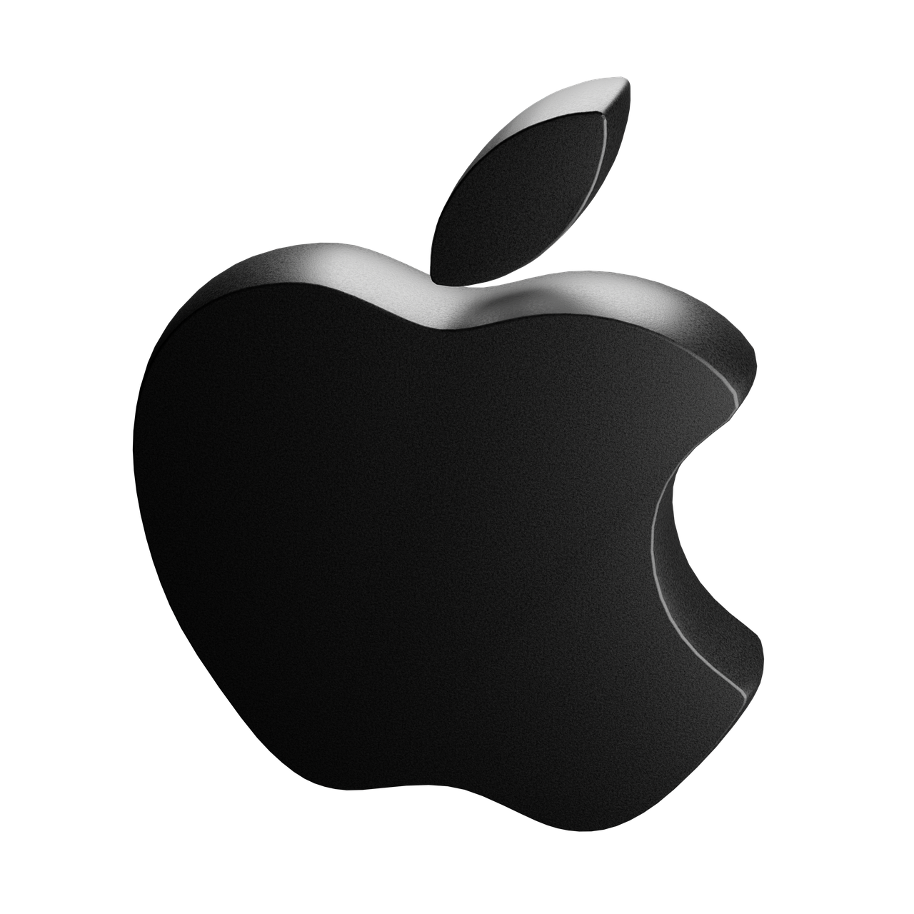
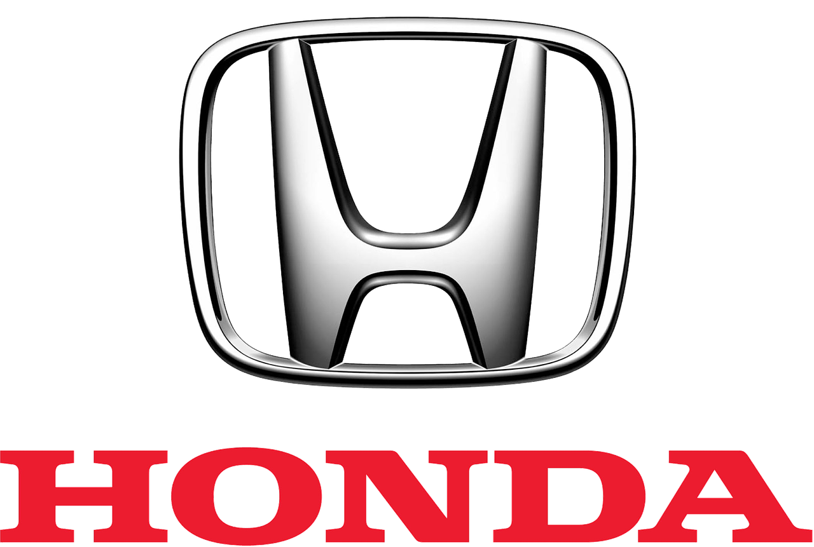
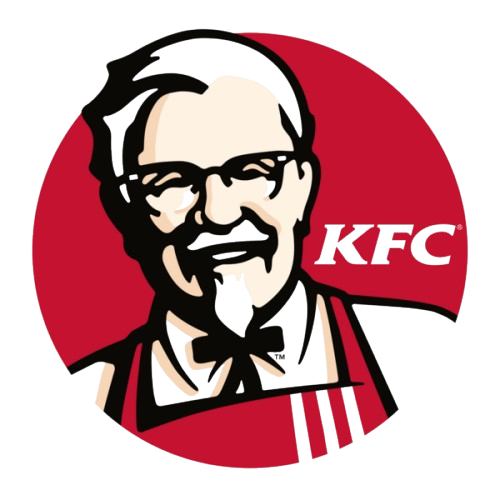
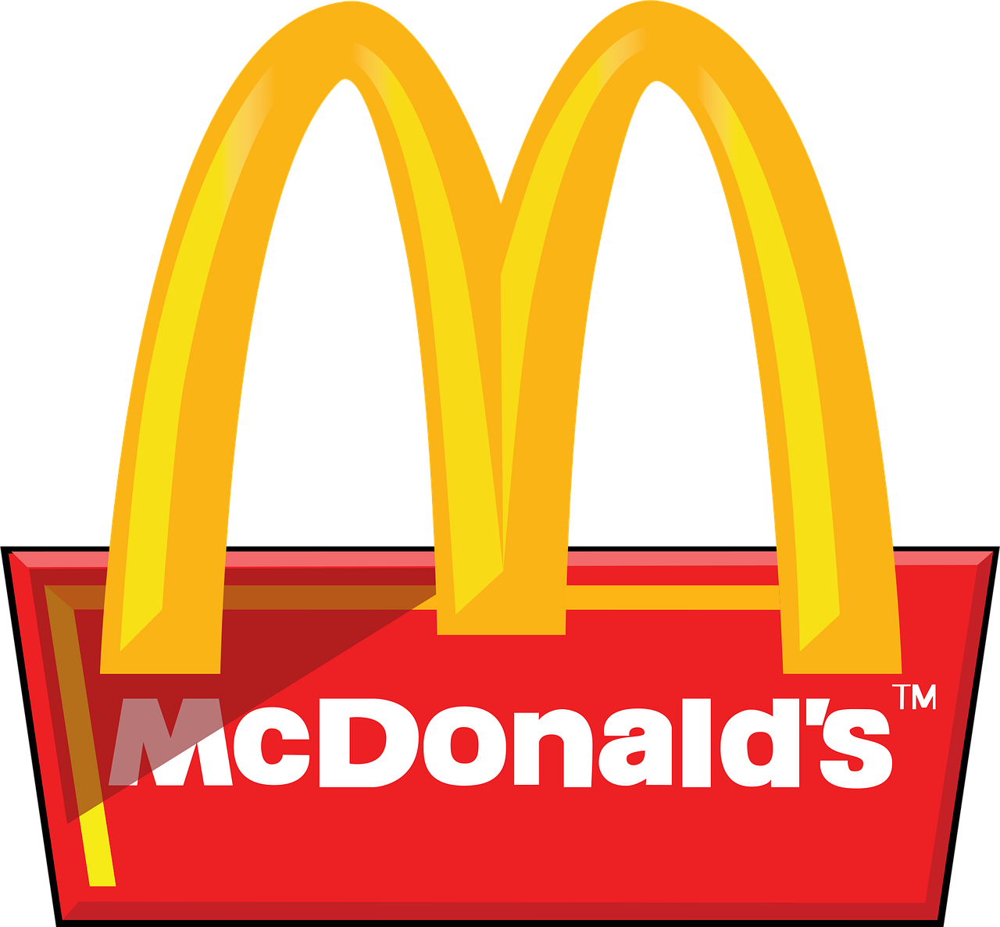

Potvrđeni govornici
Ovogodišnji TechFest donosi imena poput Elona Muska, Ivana Martinovića i drugih poznatih stručnjaka za umjetnu inteligenciju.
Najnovije vijesti iz svijeta tehnologije i inovacija.
Ovogodišnji TechFest donosi imena poput Elona Muska, Ivana Martinovića i drugih poznatih stručnjaka za umjetnu inteligenciju.
Svi zainteresirani mogu se prijaviti do 15. travnja 2026. godine putem naše web stranice.
Ovogodišnji TechFest donosi imena poput Elona Muska, Ivana Martinovića i drugih poznatih stručnjaka za umjetnu inteligenciju.
Ovogodišnji TechFest donosi imena poput Elona Muska, Ivana Martinovića i drugih poznatih stručnjaka za umjetnu inteligenciju.






Javite nam se na email: info@techfest.hr